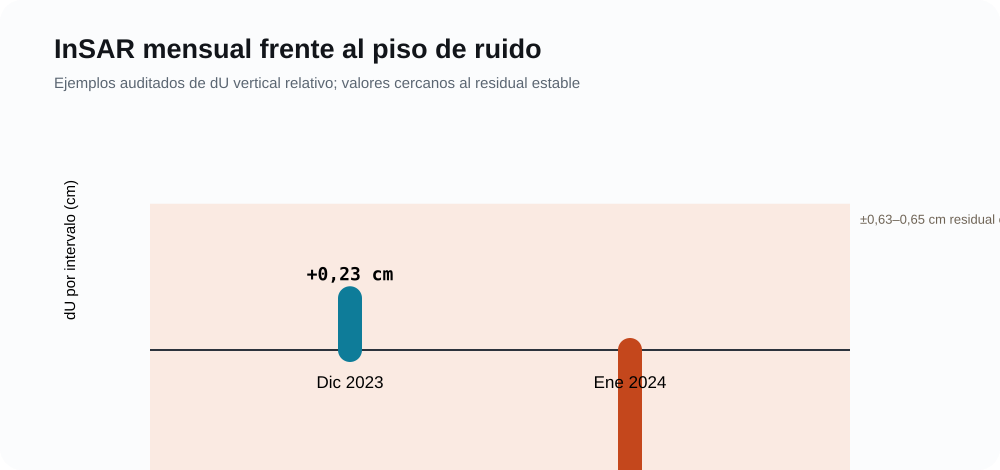

Dinámica glaciar con InSAR
Sentinel‑1 ASC/DESC y descomposición dN=0
Arquitectura implementada
El flujo integra series ascendentes y descendentes procesadas con HyP3 y MintPy, corrección troposférica, referencia espacial, productos LOS, emparejamiento temporal, descomposición Este–Vertical bajo dN=0, estadísticas por AOI y bandas de elevación, atlas y tablas de tendencia.
Señal y capacidad de detección

La señal mensual vertical está dentro o cerca del ruido. Esto no invalida el método: indica que la ventana mensual está por debajo de la capacidad de detección para una señal subcentimétrica.
Correcciones críticas
| Problema | Efecto | Tratamiento |
|---|---|---|
| Máscara ASC leída desde DESC | Cobertura y estadísticos sesgados | Resolver ruta por geometría y verificar |
| Ventana de 24 días rotulada como anual | Magnitud engañosa | Reportar duración efectiva y tasa anualizada |
| Baseline reiniciado cada año | Oculta acumulación multianual | Referencia global o acumulado enlazado |
| NoData interpretado como cero | Reduce medianas y crea bordes | Mantener NaN y reportar cobertura |
| P-valores sin autocorrelación | Sobreestima tendencia | Hamed–Rao y bootstrap por bloques |
Interpretación permitida
InSAR aporta movimiento lento y espacialmente continuo en píxeles coherentes. La contribución publicable debe centrarse en acumulados, perfiles altitudinales, calidad, incertidumbre y comparación multifuente. Todavía no existe una tasa regional final de dU para Vilcanota.